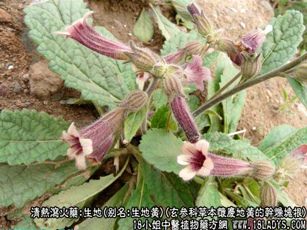
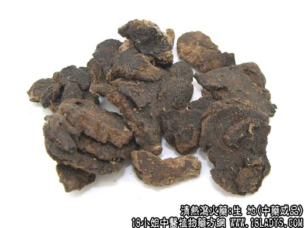
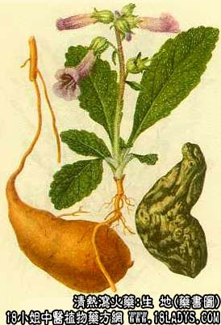

生地为常用中药，《神农本草经》列为上品。
别名：生地黄。
来源：为玄参科多年生草本植物怀庆地黄的干燥块根。
产地：主产于河南省、温县、博爱、怀庆、武陟、孟县等地。现全国各地均有栽培。
性状鉴别：呈不规则的块状或长条形，纹锤形，全体扭曲皱缩，大小不一，直径1~5厘米，长5~15厘米。每支重量10~125克。表面灰棕色，多皱褶及沟纹，粗糙。质地致密，断面紫黑色或乌黑色，油润有光亮。气微 香，味微苦甜。
以肥大，质致密沉重，断面油润，紫黑色者为佳。
主要成分：含量地黄素、梓醇、多种氨基酸等。
功效与作用：1、止血：动物实验证实，生地的提取物有促进血液凝固的作用，可见中医在止血方剂内应用生地是有根据的。
2、强心、利尿：对衰弱的心脏，其强心作用较显著，主要作用于心肌。由于有强心、利尿作用，故有助于解热。
3、降血糖：作用显著，能抑制实验性高血糖，也能使正常家免的血糖量下降。
炮制：1切片；2炒炭。（炒至起鼓枯松）
性味：甘、苦、寒。
归经：入心、肝、肾三经。
功能：滋阴、凉血。
主治：阴虚发热，热病伤阴，烦渴、骨蒸，斑疹，吐衄下血，妇女月经不调，胎动不安等症。
临床应用：1、用于温热性疾病。有舌绛、口渴、便秘、睡眠不安证候的，可用生地配玄参、麦冬等清热，方如增液汤。所谓增液，并不是真正能够增加体液，只不过是通过清热而使体内水分消耗减少，譬如釜底抽 薪，去掉了热源，水分蒸发自然减少。
2、用于治疗血热而致的出血。治吐血、衄血，可配茅根、芦根；治尿血，则配木通、车前子；治痔疮出血，可配槐角、地榆，方如凉血地黄汤。但如血证因阳虚、气虚引起，或因出血两致阳虚、气虚，则不宜用生地。
3、用于治疗阴虚内热。在养阴清热方剂内，生地常不可少。一般配鳖甲、地骨皮、知母等。治疗阴虚所致喉痛（慢性咽炎），可用生地配甘草、薄荷、山豆根等。治疗阴虚火旺所致的大便干结、习惯性便秘，可用 生地60g煎水饮，或加瘦猪肉60~120g同煮汤服。
4、用于治疗“血热”所致的皮肤病（荨麻疹、湿疹、皮癣等）。配蒺藜、白鲜皮、防风等，方如生地消风饮；或单用生地，每日90g，煎成300毫升，分1~2次服完。如为“血热”所致的疮疤， 则用生地30g，夏枯草15g，水煎服。
5、用于治疗糖尿病。以生地配天冬、杞子等为基本药，再随证加减。
6、用于治疗风湿性、类风显性关节炎。用干生地每日90g加水600~800毫升，煮沸约1小时，滤出药液约300毫升，分1~2服完。可使疼痛减轻、肿胀消退。
使用注意：1、生地性凉，用于清热凉血；熟地性温，用于补血滋阴；故虚寒者用熟地不用生地，有熟者用生地不用熟地。当清热而又要照顾体虚时，可生、熟地并用，方如百合固金汤（治肺痨咳血）、当归六黄汤 （滋阴清热、固表止汗，治阴虚发热盗汗，唇燥心烦）。
2、生地多服会影响消化功能，为防其腻滞，可酌加枳壳或砂仁。对少数有胃肠道反应（如腹痛、腹泻、恶心）的患者，要用间歇用药法，以减少副反应。
3、气血虚弱的孕妇，或胃肠虚弱、大便稀烂者，不要用生地。
用量：9~30g
处方举例：1、增液汤（《温病条辩》）：生地24g，玄参30g，麦冬24g，水煎服。
2、凉血地黄汤（《外科大成》）：生地18g，当归7g，赤芍9g，黄连3g，枳壳3g，黄芩4.5g，槐角9g，地榆12g，荆芥6g，升麻3g，天花粉12g，生甘草3g水煎服。
3、生地消风饮：生地18g，川芎3g，大风艾9g，白鲜皮12g，蒺藜12g，防风9g，水煎服。
4、百合固金汤（《医方集解》）：生地9g，熟地9g，玄参15g，麦冬9g，当归9g，白芍9g，川贝9g，桔梗6g，百合24g，甘草6g，水煎服。